平面几何
【几何学】
研究物体的形状、大小和位置关系的一门科学.
它是由生产实践中不断发展起来的.古代埃及，尼罗河经常泛滥，需要兴修水利，丈量土地，从实际需要中人们不断积累了大量的有关知识.公元前约三百年时希腊数学家欧几里得以几条公理为基础，总结了人们的经验，写成了«几何原本».从此开始有了这门科学.
我国对几何学的研究也有悠久的历史.早在公元前265 年，在«周髀算经» 和«九章算术» 中，对图形面积的计算已有记载.商高、祖冲之、祖暅等对几何学都有重大贡献.
十七世纪工业迅速发展起来，欧氏几何不能满足实际需要，笛卡儿(法国人1596—1650) 利用代数方法研究几何问题，建立了“解析几何”.
十八世纪利用微积分来讨论图形的性质为十九世纪出现的“微分几何” 打下了基础.
在十九世纪二十年代，从平行线公理的探讨中产生了非欧几何.它改变了过去欧几里得的研究方法，把图形在运动下的不变性质看做是变化着的运动性质.从而形成了“曲线论”、“曲面论”，产生了微分几何和柘朴学.
【欧几里得几何】
简称“欧氏几何”.它是几何学中的一个分科.是希腊数学家欧几里得在公元前三百年左右，把人们公认的一些事实列为定义和公理，最主要的是从平行公理(在平面内，过直线外一点只能作一条和这条直线不相交(平行) 的直线) 出发的几何理论系统.只研究在同一平面内的图形的形状位置和大小的叫平面几何；研究空间图形的形状，大小和它们的位置关系的叫立体几何(也叫空间几何).
中学学习的几何是“欧氏几何”.
【定义】
是对概念的规定.是一个判断，它的主词是应下定义的概念，在谓词后面要指出本质的属性.也就是说科学定义的目的是规定客观对象的本质特性.
定义可分为: 发生的定义，唯名的定义，实在的定义(或对象的定义).我们把那种指明对象、现象或过程如何发生的定义叫发生的定义，“圆” 的定义就是发生的定义.唯名的定义只是给概念或对象的名称下定义，而不是给对象的本身下定义.因此，唯名的定义实际上没有任何科学的性质.“等腰三角形” 的定义是: “三边中有两边相等的三角形”.这就是唯名的定义.实在的定义或对象的定义是真正科学的定义.它指出了本质的特性.“三角形”、“角” 就是实在的定义.
定义可以帮助我们清楚地、确切地使用概念.但是，定义总是相近似的，相对的，而不能彻底全面地说明对象.列宁曾说过: “太简短的定义虽然很方便，因为它概括了主要的内容，但是如果你要从定义特别明显地看出它所说明的那个现象的各个极重要的特点，那就显得这个定义很不够了.” 定义可以作为科学研究的出发点，它把我们运用的概念固定下来(这叫暂定的定义).定义还可以作为研究结果的概括(这叫概括的定义).
定义是可变的，而且是可以发展的.“圆” 的定义在学了“轨迹” 以后，可以改为“和定点距离等于定长的点的轨迹”.
【几何体】
对于一个物体，当只研究它的形状、大小而不考虑其它性质时，我们就说它是几何体，几何体简称为体.
物体的形状大小有时叫做“空间形式”，几何体是只从空间形式的观点来加以考虑的现实物体.
中学立体几何中研究的几何体只是简单体(由平面围成的) 和旋转体(由母线绕轴旋转形成的).
从运动的观点，“体” 可以看成是由“面” 运动所占有的空间.
【面】
几何体间的界限为面.平面可以无限延展；面有大小、有位置而没有厚度.
例如桌面与空气有一个界限，界限是临界的.桌面与和桌面接触(重合) 的空气，它们之间有一个客观的界限，但是它不是桌面，也不是与桌面重合的空气面.这个面没有厚度.
放在同一个试管里的油和水，它们相邻的部分，存在一个界限(面)，这个面既不是油又不是水.可见面没有厚度.
面也可以从线运动而成.
面有平面和曲面.
平面是如果在此面上任意取两点，连结而得到的直线和这面密合，它就叫平面.非平面叫曲面.
平面可以用平行四边形表示，在其内用一个字母表示，或用对角两个顶点字母表示.
图2 －1 可表示为平面α，或平面AC，平面BD.也可以表示为▱α，▱AC，▱BD.
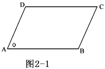
平面几何研究的图形都在同一平面内.
曲面有很多种.在中学立体几何中出现的有圆柱面、圆锥面、圆台面、球面等.
【点】
两线相交的位置.它没有大小.有限的线的端也是点.
几何上点用一个大写的拉丁字母表示.不同的点要用不同的字母表示.
【几何图形】
点、线、面或若干个点、线、面组合在一起，就成为几何图形.
几何图形有平面图形和空间图形(立体图形).
平面几何只研究平面图形，立体几何研究空间图形，而中学只研究一部分空间图形 (简单体和旋转体).
【直线】
点沿同一方向运动可得到直线.一根拉紧的线，一张纸的折痕都给我们直线的形象.直线是向两方无限延伸着的.
一条直线上有无限多个点，直线可以用表示它上面任意两个点的大写字母来表示，也可以用一个小写的字母表示.如图2 － 2 可表示为直线AB，或直线AC，直线BC，也可以表示成直线l.学习直线需注意以下几个问题:
(1) 弄懂概念
直线是平面几何的原始概念，不加定义，正如点没有定义一样，他们都只能作形象的描绘.性质一“过两点有且只有一条直线” (直线公理).“有” 表示存在，“只有” 表示惟一，公理就是人们经过多年实践总结出来，是任何人都不会有异议的，不加证明的正确命题.
性质二两条直线相交只有一个交点.两条直线多于一个公共点时叫两条直线重合.
(2) 掌握直线的表示方法
方法1 “一条直线可以用一个小写字母表示”，上图中的直线可记作直线l，l 只表示直线，不表示直线上某一具体的点，切忌用一个大写字母和一个小写字母表示直线，比如绝不能写成直线Al.
方法2 “一条直线也可以用在这个直线上的两点来表示”，上图中的直线，也可记作直线AB，或直线BA，与两字母的先后顺序无关.
(3) 记住直线特征
直线没有宽窄，无端点，不能说延长直线AB，直线长度无限，两条直线无法比较长短，即直线无法度量、无法进行运算、不能平分.
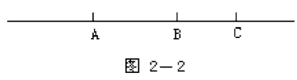
图2 －2 直线也可以看成是沿同一方向运动的所有点的集合.
经过一点可以有任意多条直线.图2 －3 是经过A 点三条直线a，b，c.
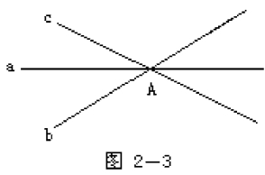
画直线可以用直尺，用笔沿着直尺的边缘画下去，但画出的只是直线的一部分.
过两点总可以画出直线，而且只有一条.“两点确定一条直线” 叫直线的基本性质(公理).
【射线】
在直线上某一点一旁的部分.射线也叫半直线.射线只有一个端点，另一端是无限延伸的.
射线用表示它的端点和射线上任意一点的大写字母来表示，而且必须把端点写在前面.如射线OA (图2 －4)。
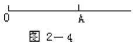
【线段】
直线上两点间的部分叫线段.这两个点叫线段的端点.
线段用表示它的两个端点的两个大写字母来表示，如线段AB (图2 －5).也可以用一个小写字母表示，如线段a (图2 －6).
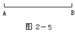
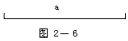
如果把线段向一方延伸，这叫延长线段，延长线段在叙述时要注意方向，延长线段AB，如图2 －7.延长线段BA 如图2 －8，也叫反向延长AB.
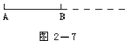
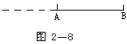
延长的部分叫线段的延长线，它用虚线表示.
延长线段如果是有限的要指明终止点，如延长AB 到C.
线段的长度是可以度量的，这就是线段有大小.
【两点间的距离】
连结两点的线段的长度叫两点间的距离.
例 如点A 与B 间的距离即线段AB 的长.
表示两点间的距离可以用绝对值.如A、B 的距离表示成｜AB ｜.
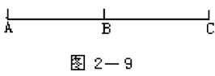
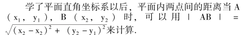
在数轴上两点的距离是用终点的坐标与起点的坐标之差来计算.如图2 －10.
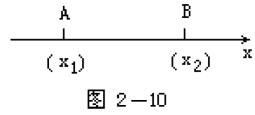
｜AB ｜ ＝x2－x1，也可以用两点坐标差的绝对值来计算｜AB ｜ ＝｜x1－x2｜.
【线段的中点】
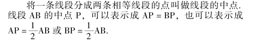
如果线段在直角坐标系中，A (x1，y1)，B (x2，y2)，它们的中点P (x，y)，可以用下列公式求出P 点的坐标.
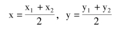
【角】
有公共端点的两条射线所组成的图形叫角.这个公共端点叫做角的顶点，这两条射线叫角的边.顶点和边都叫角的元素.
表示一个角可用符号“∠” 在它后面写上三个大写字母，这三个字母是每条射线上取一点和顶点，而且要把顶点写在三个大写字母的中间.如图2 －11，可表示为∠AOB，或∠BOA.有时在只有一个角时，也可以用一个大写字母(顶点) 来表示，如∠O.还可以在角的内部用一个小写的希腊字母或阿拉伯数字表示一个角，图2 －12可表示成∠α，图2 －13 表示成∠1.
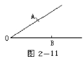
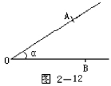
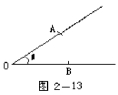
角的另一种定义是一条射线由原来的位置绕着它的端点旋转到另一个位置，这时起始位置的射线与终止位置的射线就形成了一个角.如图2 －14 是射线OA 绕着O 点逆时针旋转到OB 的位置，则形成∠AOB.起始位置的射线叫角的始边，终止位置的射线叫角的终边.始边达到终边所经过的平面就是角.逆时针旋转所形成的角规定为正角，顺时针旋转所形成的角规定为负角.图2 －15∠AOB是负角.要表示正负，必须在角的内部画出箭头表示旋转方向.在初中只研究正角.如果不加说明角都指小于平角的角.
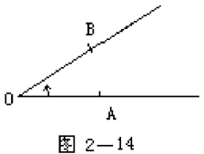
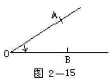
角是有大小的.角的大小是指两条射线张口的大小，角的边是无限伸展的(因为是射线)，所以角的大小与角的边画的长短无关.
量度角的大小使用量角器.使用它量角要使角顶点与量角器圆心重合；再将角的一边与量角器的0°线重合，角的另一边所在量角器的位置的读数就是这个角的大小.
【平角】
角的两边互为反向延长线时，这个角叫平角.平角的两个边成一条直线.
表示平角时要把角的内部用弧线画出.如图2 －16 平角∠AOB.
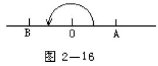
平角的度数是180°，∠AOB ＝180°.
【周角】
角的两边重合时，(终边旋转一周与始边重合) 这样的角叫周角.周角占有了整个的平面.
画一个周角可如图2 －17 所示.
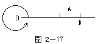
规定一个周角的大小是360°，∠AOB ＝360°.
【角的度量单位】
1 周角＝360°
1 平角＝180°
1° ＝60′，1′＝60″
“°” 叫度，“′” 叫分，“″” 叫秒.
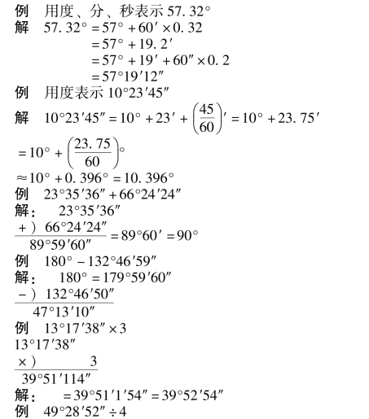
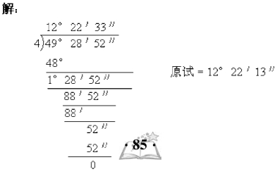
【角的和】
一个角的度数是另两个角度数的和，这个角就是这另两个角的和.
【角的差】
一个角的度数是另两个角度数的差，这个角就是这另两个角的差.
【角的平分线】
从一个角引一条射线，把这个角分成两个相等的角，这条射线叫这个角的平分线.
如图2 －18，射线OP 把∠AOB 分成两个相等的角∠AOP ＝∠BOP，OP 叫∠AOB 的角平分线.
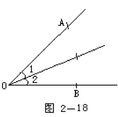
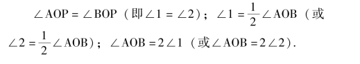
【直角】
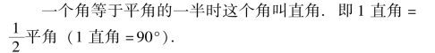
直角可以用Rt∠表示.如∠AOB 是直角可以表示成∠AOB ＝Rt∠或Rt∠AOB.
在图形中表示直角，要在角顶处用“□” 来表示.如图2 －19.
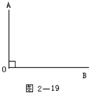
因为每个直角都是90°，所以所有的直角都相等.
【锐角】
小于直角的角叫锐角.
【钝角】
大于直角而小于平角的角叫钝角.
【优角】
大于平角而小于周角的角叫优角.
【互为余角】
两个角的和等于直角时，说这两个角互为余角.简称互余.也可以说其中一个角是另一个角的余角.
如∠AOB 和∠CND 互为余角，则∠AOB ＋∠CND ＝90°.
如两个互为余角的角有一个公共边，则称它们为邻余角.
【互为补角】
两个角的和等于平角时，这两个角叫互为补角.如∠AOB 和∠CMD 互为补角，则∠AOB ＋∠CMD ＝180°.简称∠AOB 与∠CMD 互补.
如两个互为补角的角有一个公共边，则称它们为邻补角.邻补角的另一边互为反向延长线.(图2 －20) ∠α和∠β 互为邻补角.
【方向角】
在地球表面上用东、西、南、北和角的度数来表示角叫方向角.它着重表示角终边的位置方向.方向角的表示方法是把角的度数写在两个方向之间.如北60°东图2 －21 中∠AOB，东30°北则是∠BOC，西45°南是图2 －21中∠DOE，南45°西是图2 －21 中∠FOE.一般中间角的度数不超过90° (即小于90°)，如南120°北，指∠FOB，则说成东30°北∠COB 的方向.
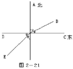
点O 的东北就是东45°北；点O 的西南就是西45°南等等.
【对顶角】
一个角的两边分别是另一个角两边的反向延长线，这两个角叫做对顶角.
两条直线相交于一点，可以形成对顶角，图2 －22，AB 与CD 交于O，∠1 与∠2 是对顶角，∠3 和∠4 是对顶角.
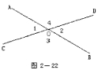
两个对顶角相等.
【垂直】
两条直线相交所构成的四个角中有一个是直角时，这两条线叫互相垂直.
其中一条直线叫另一条直线的垂线.它们的交点叫垂足.
图2 －23 中AB 与CD 互相垂直，AB 叫CD 的垂线，CD 叫AB 的垂线，交点O 叫垂足.
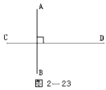
AB⊥CD 读作“AB 垂直于CD”，为了同时说出垂足，可以叫做AB 垂直CD 于O.
【垂线】
互相垂直的两条直线，其中一条叫另一条的垂线.
【垂足】
互相垂直的两条直线的交点叫垂足.
【斜线】
两条直线相交不成直角时，其中的一条叫做另一条的斜线.
【斜足】
两条直线相交不成直角时，它们的交点叫斜足.
【垂线段】
互相垂直的两直线中，从某一条垂线的任一点到垂足的线段，叫另一条垂线的垂线段.
【斜线段】
不垂直的两条直线中，一条直线上的任意一点到斜足的线段，叫另一条斜线的斜线段.
【点到直线的距离】
从直线外一点到这条直线的垂线段的长叫做点到直线的距离.
【两条平行线的距离】
两条平行线中，一条直线上任一点到另一条直线的距离，叫这两条平行线的距离.
【线段的垂直平分线】
垂直于一条线段并且平分这条线段的直线，叫做这条线段的垂直平分线.
【中垂线】
线段的垂直平分线又叫线段的中垂线.
【比例】
两个比相等的式子叫比例.
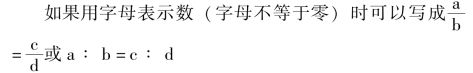
a 叫第一比例项也叫比例外项；b 叫第二比例项也叫比例内项；c 叫第三比例项也叫比例内项；d 叫第四比例项也叫比例外项.
【两条线段的比】
在同一单位下，两条线段长度的比叫做这两条线段的比.
【比例线段】
在四条线段a，b，c，d 中，如果a 和b 的比等于c和d 的比，那么这四条线段叫做成比例线段.简称比例线段.
【比例尺】
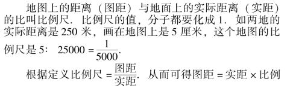
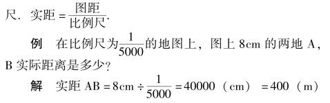
【黄金分割】
把一条线段(AB) 分成两条线段，使其中较大的线段(AC) 是原线段(AB) 与较小的线段(BC) 的比例中项，叫做把这条线段黄金分割.图2 －41，AC2＝AB·CB.
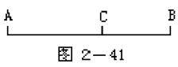
如令AB ＝l，AC ＝x
则BC ＝l－x.
∴x2＝l· (l－x) 即
x2＋lx－l2＝0
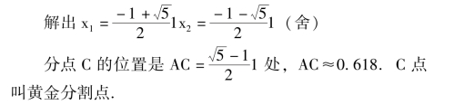
【内分点】
在一条线段上的一个点，将线段分成两条线段，这个点叫做这条线段的内分点.
【外分点】
一个点在一条线段的延长线上，这个点叫线段的外分点.
外分点分线段所得的两条线段也是这分点分别和线段的两个端点确定的线段.如图2 －42.点D 是线段AB 的外分点，外分线段AB 为两段，AD 和BD.
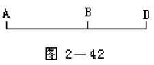
【点的射影】
从一点到一条直线所作垂线的垂足叫做这点在这条直线上的正射影.图2 －44.P1是P 在直线l 上的正射影.Q1是Q 在直线l 上的正射影.
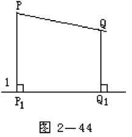
一条线段的两个端点在一条直线上的正射影之间的线段，叫做这条线段在这条直线上的正射影.图2 －44，P1、Q1 是P、Q 在直线l 上的正射影.
正射影简称射影或投影.
【同位角】
两条直线分别与第三条直线相交(或叫两条直线被第三条直线所载)，构成八个角.如图2 －24，位置相同的(分别在两条直线的相同一侧，并且都在第三条直线的同旁) 两个角都叫做同位角.∠1 与∠5，∠2 与∠6，∠3 与∠7，∠4 与∠8 都是同位角.
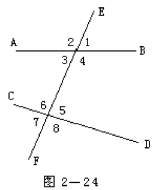
【内错角】
两条直线分别与第三条直线相交，构成八个角中，在两条直线之间，并且位置交错(在第三条直线的两旁) 的一对角叫内错角.图2－24 中∠3 与∠5，∠4 与∠6 叫内错角.
【外错角】
两条直线分别与第三条直线相交，构成八个角中，在两条直线的外侧，并且位置交错(在第三条直线的两旁)的一对角叫外错角.图2 －24 中∠1 与∠7，∠2 与∠8 是外错角.
【同旁内角】
两条直线分别与第三条直线相交，构成八个角中，在两条直线之间，并且在第三条直线的同旁的一对角叫同旁内角.图2 －24 中∠3 与∠6，∠4 与∠5 是同旁内角.
【同旁外角】
两条直线分别与第三条直线相交，构成八个角中，在两条直线的外侧，并且在第三条直线的同旁的一对角叫同旁外角.图2 －24 中∠1 与∠8，∠2 与∠7 是同旁外角.
【平行线】
在同一平面内不相交的两条直线叫平行线.平行用“∥” 表示.图2 －25 中AB 和CD 是平行线，记作“AB∥CD”，读作“AB 平行于CD”.有时在图上表示两条直线平行，在每条直线上画一箭头，使箭头同向.
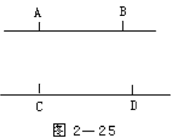
【命题】
判断一件事物的语句叫命题.
每一个命题都由两部分组成: 一部分是题设，这是已知事项；另一部分是结论，这是由已知可以推出的事项.
命题可以写成: AB，A 是已知部分的题设，B 是可以推出的结论.
叙述一个命题经常采用“如果……，那么……” 或“假设……就……”，或“若……则……”.
【真命题】
命题中结论是正确的叫真命题.
例 如: 如果两个角是对顶角，那么这两个角相等.就是真命题.
【假命题】
命题中结论是错误的叫假命题.
例 如: 两条不相交的直线叫平行线.是错误的，是假命题.因为只有在同一平面内两条不相交的直线叫平行线.
又如: 和定点距离等于定长的点的轨迹是圆.这也是假命题.因为只有在同一平面内和一个定点距离等于定长的点的轨迹是圆.
【公理】
人们从实践经验中总结出来的真理，不需要用推理方法证明的真命题，叫公理.
例 如: 两点可以确定一条直线.就是公理.又如在连结两点间的线中以线段为最短.也是公理.
【定理】
用推理的方法判断为正确的命题叫做定理.
【推论】
由定理直接推出来的定理叫做推论.
【证明】
推理的过程就是证明.
证明的依据是已知条件、定义、定理、公理、法则、公式等.
证明要每句话都必须有根据(言必有据).
证明一个命题的步骤是:
(1) 按照题意画出图形；
(2) 分清命题的条件和结论，结合图形在已知项中写出条件，在求证项中写出结论；
(3) 在证明项中写出证明过程.
如果要证明的是假命题，只要举出一个例子说明这个命题不成立就可以了.
【三角形】
由三条线段首尾顺次连结所组成的图形叫三角形.
组成三角形的三条线段叫做三角形的边.
相邻两边的公共端点叫做三角形的顶点.
三角形相邻两边组成的角叫三角形的内角，简称三角形的角.
三角形的一边与另一边的反向延长线组成的角叫做三角形的外角.
三角形用符号“△” 表示.△ABC 是以A、B、C 为顶点的三角形.
三角形的边和角叫做三角形的元素.
【三角形的内(外) 角和定理】
(1) 三角形内角和定理: 三角形的三个内角和等于180°；
(2) 推论: ①直角三角形的两锐角互余；
②三角形的一个外角等于和它不相邻的两个内角的和；
③三角形的一个外角大于任何一个和它不相邻的内角.
(3) 三角形外角和定理: 三角形外角和等于360°.
【三角形的角平分线】
三角形一个角的平分线和这个角的对边相交，这个角的顶点和交点间的线段叫做三角形的角平分线.
【三角形的中线】
连结三角形一个顶点和它的对边中点的线段叫三角形的中线.
【三角形的高】
三角形一个顶点到它的对边所在直线的垂线段叫三角形的高.
锐角三角形的高在三角形内部(如图2 －26)；直角三角形斜边上的高在三角形内部，两直角边是它的高(如图2 －27)；钝角三角形夹钝角两边上的高在三角形外，钝的所对边上的高在三角形内(如图2 －28).
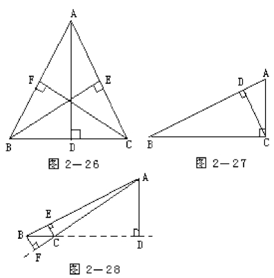
【三角形的中位线】
连结三角形两边中点的线段叫三角形的中位线.
【三角形的三边关系】
(1) 定理: 三角形任何两边的和大于第三边。即:设a、b、c 为△ABC 的三边，则a ＋b >c，a ＋c >b，b ＋c>a。推论: 任何两边之差小于第三边。(2) 三条线段可以组成三角形的条件: 长为a、b、c 的三条线段可组成三角形｜b－c ｜ <a<b ＋c 两条较小的线段之和大于最大的线段.
【三角形的分类】
按边来分时有不等边三角形、等腰三角形、等边三角形(正三角形).
按角来分时有锐角三角形、直角三角形、钝角三角形(如图2 －29).
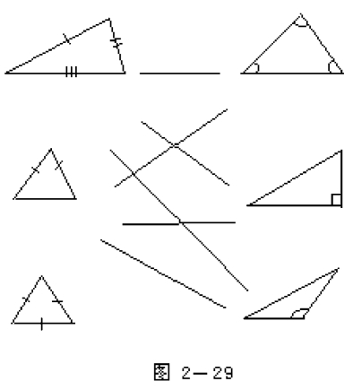
有时混合分类:
不等边锐角三角形或锐角不等边三角形.
不等边直角三角形或直角不等边三角形.
不等边钝角三角形或钝角不等边三角形.
等腰锐角三角形或锐角等腰三角形.
等腰直角三角形或直角等腰三角形.
等腰钝角三角形或钝角等腰三角形.
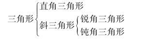
【等腰三角形】
三边中有两边相等的三角形叫等腰三角形.
在等腰三角形中，相等的两边都叫做腰；另一边叫底边；两腰的夹角叫顶角；腰和底边的夹角叫底角.
等边三角形是底和腰相等的三角形，也叫正三角形.
【斜三角形】
锐角三角形和钝角三角形合称斜三角形.
【锐角三角形】
三个角都是锐角的三角形叫锐角三角形.
【直角三角形】
有一个角是直角的三角形叫直角三角形.夹直角的边叫直角边(也叫勾或股)，另一边叫斜边(也叫弦).
【钝角三角形】
有一个角是钝角的三角形叫钝角三角形.
【全等形】
能够完全重合的两个图形叫全等形.
【全等三角形】
两个三角形能完全重合时叫全等三角形.
互相重合的顶点叫对应顶点；互相重合的边叫对应边；互相重合的角叫对应角.
表示两个三角形全等用符号 “≌”.如△ABC 和△DEF 全等(如图2 －30)，可以写成△ABC≌△DEF.注意对应顶点要写在相应的位置上.不要写成△ABC≌△EDF.
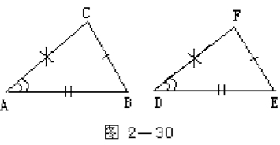
【三角形的稳定性】
三角形的三条边固定以后它的形状和大小就固定了.这种性质叫三角形的稳定性.在实际生产和生活中经常利用三角形的稳定性，采用三角形的结构.
【平行四边形】
两组对边分别平行的四边形叫平行四边形.
平行四边形用符号“▱” 表示，如平行四边形ABCD，表示成▱ABCD.
【矩形】
有一个角是直角的平行四边形叫矩形.矩形也叫长方形.
【菱形】
有一组邻边相等的平行四边形叫菱形.
【正方形】
有一组邻边相等并且有一个角是直角的平行四边形叫正方形.正方形是邻边相等的矩形，也是有一个角是直角的菱形.
【梯形】
一组对边平行而另一组对边不平行的四边形叫做梯形.
平行的两个边叫梯形的底(通常将较短的边叫上底，较长的边叫下底).
不平行的两边叫梯形的腰.两底间的距离叫梯形的高.
【直角梯形】
一腰垂直于底的梯形叫直角梯形(图2 －39).
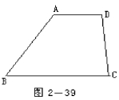
【等腰梯形】
两腰相等的梯形叫等腰梯形(图2 －40).
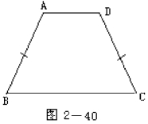
【梯形的中位线】
连结梯形两腰中点的线段叫梯形的中位线.
【多边形】
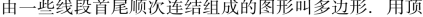
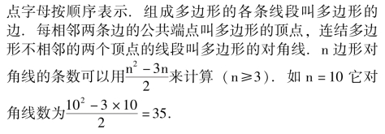
【多边形的周长】
多边形各边长度的和叫多边形的周长.
【凸多边形】
把多边形的任何一条边向两方延长，如果多边形的其它各边都在延长所得的直线的同侧，这样的多边形叫凸多边形.简称多边形.
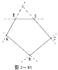
【凹多边形】
把多边形的一条边向两方延长，多边形的其它各边有的不在这条延长边的直线的同侧，这样的多边形叫凹多边形.如图2 －36，BC 不在AD 所在直线的同一侧.凹多边形要特别指明，图2 －36 为凹多边形ABCD.
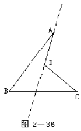
【多边形的内角】
多边形相邻两边所组成的角叫多边形的内角.凸多边形的每个内角都小于180° (钝角，直角或锐角).
【多边形的外角】
多边形的角的一边与另一边的反向延长线所组成的角叫多边形的外角.
【相似三角形的定义】
对应角相等，对应边成比例的三角形叫相似三角形，两个条件缺一不可.
【相似比】
如果两个三角形相似，则第一个三角形的某一边与第二个三角形的对应边的比值，叫做相似比 (或叫相似系数).全等三角形的相似比为1.是相似三角形的特殊情况.
【相似三角形的性质】
两个三角形相似，对应高的比，对应中线的比，对应角的平分线的比都等于相似比，面积的比等于相似比平方.
【相似多边形】
如果两个边数相同的多边形的对应角都相等，对应边都成比例，这两个多边形叫相似多边形.
相似多边形的对应边的比叫做相似比 (或相似系数).
【辅助线】
为了证明的需要，在原来图形上添画的线叫辅助线.在平面几何里，辅助线通常画成虚线.
【轴对称】
把一个图形沿着一条直线折过来，如果它能够与另一个图形重合，这两个图形叫轴对称.轴对称也叫关于一条直线的对称.
【对称点】
两个轴对称图形，能够重合的点叫对称点.如图2－31 的A 与A′，B 与B′，C 与C′是对称点.
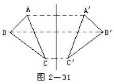
【对称轴】
轴对称中沿着折叠的直线叫对称轴.
【轴对称图形】
如果一个图形，沿一条直线对折，直线两旁的部分，能够互相重合(图形本身的两部分重合) 这个图形叫轴对称图形.
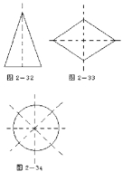
如等腰三角形是轴对称图形；菱形是轴对称图形；圆是轴对称图形(见图2－32，2－33，2－34).
轴对称图形至少有一条对称轴.等腰三角形底边上的高是它的对称轴；菱形的两条对角线是它的对称轴；圆的任一条直径都是它的对称轴.
轴对称和轴对称图形的区别是: 轴对称是两个图形对于一条直线的特殊位置关系；而轴对称图形是一个图形具有轴对称的性质.
轴对称图形在实际应用中极为广泛.
【中心对称】
如果把一个图形绕着一个点旋转180°后，它和另一个图形重合，这两个图形叫关于这个点的对称.也叫中心对称.
【对称中心】
在中心对称中，两图形围绕着的那个点，叫它们的对称中心.
【关于中心的对称点】
中心对称的两图形能够重合的两个点，叫关于中心的对称点.
图2－37 中△ABC 与△A′B′C′关于O 对称，A 与A′，B 与B′，C 与C′为关于O 的对称点.
【中心对称图形】
如果一个图形绕一个点旋转180°后，能够和原来图形互相重合，也就是图形和它本身重合，这个图形叫中心对称图形.
这个点叫它的对称中心.
平行四边形是中心对称图形.它的对称中心是对角线交点.如图2－38 中O 是它的对称中心.
【弦】
连结圆上任意两点的线段叫做弦.
【直径】
经过圆心的弦叫圆的直径.直径等于半径的2 倍.
【圆的定义】
平面上到一个定点的距离等于定长的点的轨迹叫做圆，定点叫做圆心，定长叫做半径.圆也可以定义为点集M ＝{P ｜ ｜OP ｜ ＝r}，其中O 是定点－ －圆心，r 是定长——半径.
【圆弧】
【半圆】
圆的任意一条直径的两个端点分圆成两条弧，每一条弧都叫做半圆.
【优弧】
大于半圆的弧叫做优弧.优弧要用三个字母表示如图2－46。
【劣弧】
小于半圆的弧叫做劣弧.
【同心圆】
圆心相同，半径不相等的两个圆叫做同心圆.
【等圆】
能够重合的两个圆叫做等圆.
【等弧】
在同圆或等圆中能够互相重合的弧叫做等弧.
【三角形的外接圆】
经过三角形各顶点的圆叫做三角形的外接圆.
【三角形的外心】
三角形外接圆的圆心叫三角形的外心.
【圆的内接三角形】
三角形的各顶点都在圆上时，这个三角形叫做这个圆的内接三角形.
【多边形的外接圆】
如果一个圆经过多边形的各顶点，这个圆叫做多边形的外接圆.
【圆的内接多边形】
如果一个多边形的各顶点都在圆上时，这个多边形叫做这个圆的内接多边形.
【圆周角】
连接圆周上一点到圆弧两端点的弦对这圆弧所张的角.
【圆心角】
顶点在圆心的角叫做圆心角.
【直线与圆相离】
直线和圆没有公共点时，叫做直线与圆相离.
【直线与圆相切】
直线与圆有唯一公共点时，叫做直线和圆相切.这时直线叫圆的切线，唯一的公共点叫做切点.
【直线和圆相交】
直线和圆有两个公共点时，叫做直线和圆相交.这时直线叫圆的割线.
【切线长】
在经过圆外一点的切线上，这一点和切点之间的线段的长叫做这点到圆的切线长.
【三角形的内切圆】
和三角形各边都相切的圆叫做三角形的内切圆.
【圆的外切三角形】
圆和三角形内切时，这个三角形叫这个圆的外切三角形.
【多边形的内切圆】
和多边形各边都相切的圆叫多边形的内切圆.
【弦切角】
顶点在圆上，一边和圆相交，另一边和圆相切的角叫做弦切角(图2－50).
【两圆内切】
两个圆有唯一的公共点，并且除了这个公共点以外，一个圆上的点都在另一个圆的内部时，叫做两个圆内切.
这个唯一的公共点叫做切点.
【连心线】
经过两圆心的直线叫两个圆的连心线.
【外公切线】
两个圆在公切线的同旁时，这样的公切线叫外公切线.图2－51 中AB、CD 是☉O1 和☉O2 的外公切线.
【内公切线】
两个圆在公切线的两旁时，这样的公切线叫做内公切线.图2－52 中AB、CD 是☉O1 和☉O2 的内公切线.
【连接】
【外连接】
【内连接】
【正多边形】
各边相等，各角也相等的多边形叫做正多边形.
【圆的内接正n 边形】
正n 边形的顶点都在圆上这个多边形叫圆的内接正n边形.如图2－56
【圆的外切正n 边形】
正n 边形的各边都与一个圆相切，这个多边形叫做圆的外切正n 边形。如图2－57
【正多边形的中心】
正多边形的外接圆(或内切圆) 的圆心叫做正多边形的中心.
【正多边形的半径】
正多边形外接圆的半径叫做正多边形的半径.
【正多边形的边心距】
正多边形内切圆的半径叫做正多边形的边心距.
【正多边形的中心角】
正多边形每一边所对的外接圆的圆心角叫做正多边形的中心角.
【正多边形的对称轴】
正多边形都是轴对称图形，一个正n 边形共有n 条对称轴.每条对称轴都过正多边形的中心.
【直线的基本性质】
经过两点有一条直线，并且只有一条直线.简单说成:两点确定一条直线.
【垂线的性质】
直线外一点与直线上各点连结的所有线中，垂线段最短，简单说成: 垂线段最短.
【平行公理】
经过直线外一点，有一条而且只有一条直线和这条直线平行.
【平行线的判定公理】
两条直线被第三条直线所截，如果同位角相等，那么这两条直线平行.
【边角边公理】
有两边和它们的夹角对应相等的两个三角形全等.(可以简写成“边角边” 或“SAS”)
【角边角公理】
有两角和它们的夹边对应相等的两个三角形全等.(可以简写成“角边角” 或“ASA”)
【矩形面积公理】
矩形面积等于它的长a 和宽b 的积.